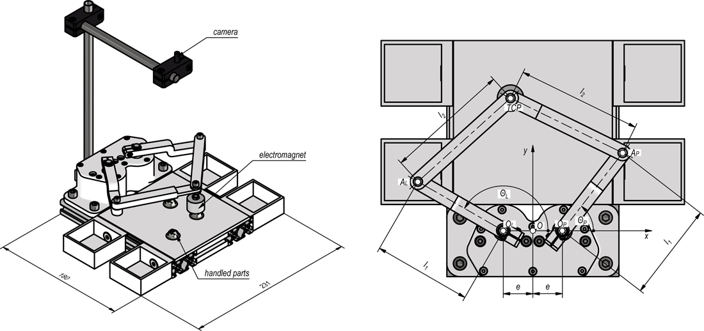
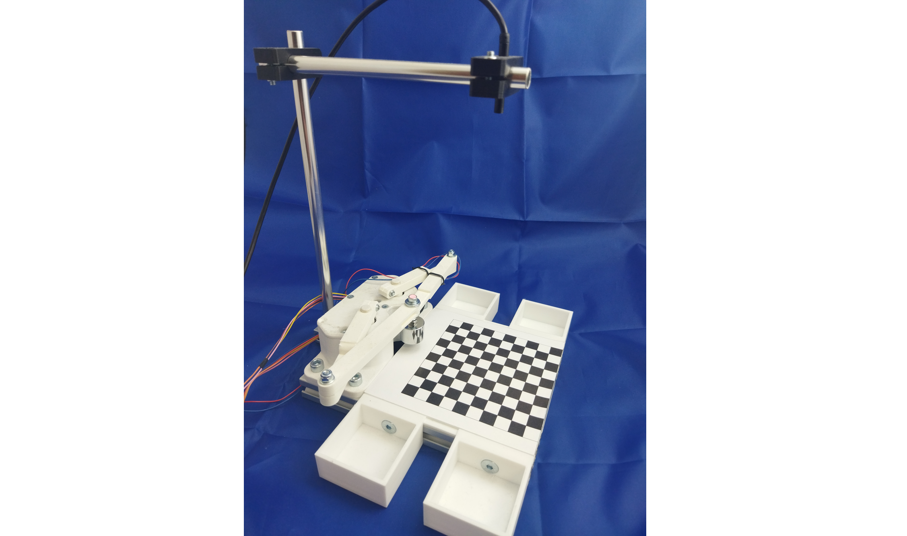
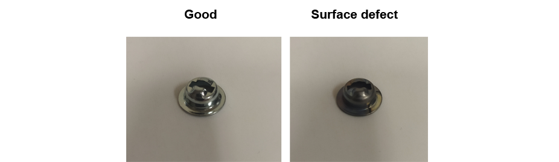
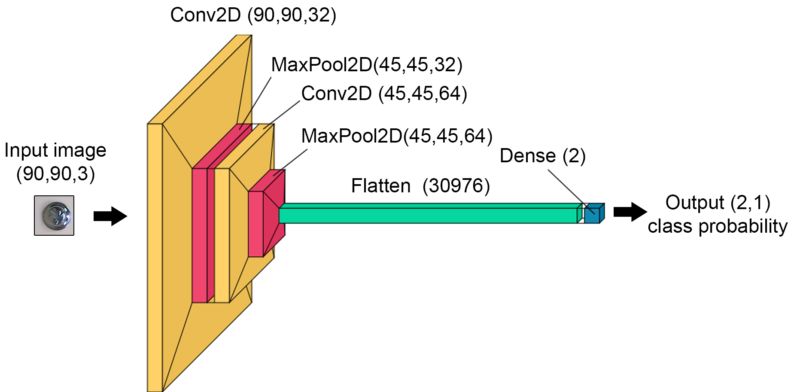
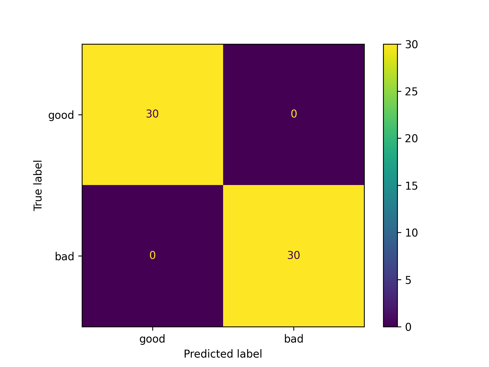

Vision based control of small educational double SCARA robot
Used tools and packages
Python OpenCV TensorFlow Scikit-learn NumPy Scipy C RaspberryPI MatlabIntroduction
This project aimed to develop an easy-to-build and deploy educational robot, which may be used during classes to study machine vision-based control and classification. This was achieved by a double SCARA structure driven by two stepper motors controlled by RaspberryPI Zero. The 3D CAD model of the designed manipulator is shown below:
As the gripper the electromagnet is used which may manipulate objects into one from selected boxes attached. The camera is observing the working area of the manipulator. Control of the position of the tool center point (TCP) is realized with the aid of inverse kinematics:
Manipulator parts were manufactured with the aid of 3D printing. The camera may provide information about the position of TCP and object location. For that purpose, the calibration needs to be performed:
In that way one may obtain, based on the image coordinates the coordinates in the real working area:
Object detection may be realized with OpenCV hblob analysis. Next, the location of each object within the image is used to calculate the position in the working area and to handle parts in the proper box.
Image classification
The proposed educational stand may be used for image recognition and classification. As an example, the small steel galvanized parts are used (a) which part of them have surface defects (b):
This is a real industrial problem occurring in mass production which should be handled by an automatic system of inspection. The previously described object detection method may be used for data collection:
Acquired data consists of 304 bad and 304 good images the size of which is 90px x 90px randomly located within the working area. These data are then used to train, validate and test neural network schematically shown below:
The neural network was designed as a deep convolutional neural network with six hidden layers. To train, the 214 defects and 214 good images were used. For validation and testing 60/60 and 30/30 images were used respectively. The results of testing are shown as confusion matrix below:
Summary
Presented educational stand may be successfully used for courses on:
- deep learning in machine vision,
- classification
- object tracking and detection,
- vision-based control.